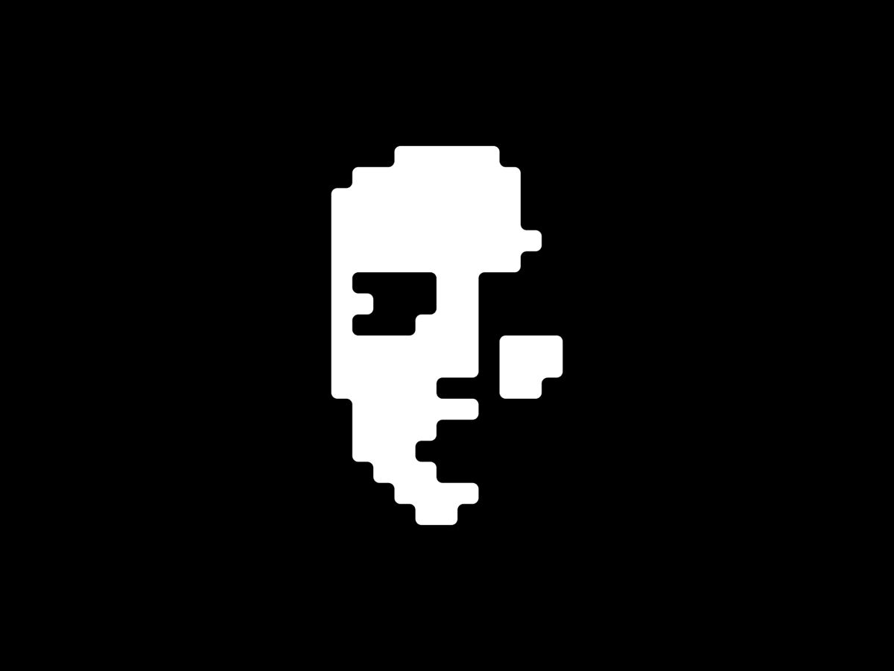

Bilgisayar Mühendisliği Öğrencisi
Ostim Teknik Üniversitesi Bilgisayar Mühendisliği Bölümü 3. sınıf öğrencisiyim. Bulut bilişim altyapıları, konteynerizasyon teknolojileri ve gerçek zamanlı işletim sistemleri (RTOS) üzerinde çalışmalar yürütüyorum. Karmaşık sistem mimarilerini optimize etmeye ve DevOps süreçlerini otomatikleştirmeye odaklanıyorum.
DevOps ekipleri için Kubernetes üzerinde kurgulanmış, mikroservis mimarisine sahip bulut tabanlı bir olay müdahale (Incident Response) ve gerçek zamanlı işbirliği platformu.
Otonom sürüş destek sistemleri için geliştirilmiş; Radar ISR Compute ve Log görevlerini içeren, Mutex ile Queue mekanizmalarıyla senkronize edilmiş kritik zamanlı işletim sistemi simülasyonu.
Minikube ve Docker ortamlarında Open5GS ve UERANSIM yapılandırmaları ile uçtan uca simüle edilmiş 5G Core ağ trafiği yönetimi ve Wireshark ile paket analizi doğrulamaları.
Stajyer Mühendis olarak; NetBox entegrasyonu, IPAM (IP Adres Yönetimi), veri merkezi varlık takibi ve bulut altyapı bileşenlerinin ağ konfigürasyonları süreçlerinde aktif rol aldım.